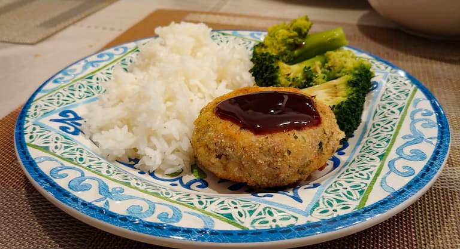

What is korokke?

Korokke, or croquettes as I grew up calling them, were introduced to Japan in the late 1800s from France. They are typically made with ground meat, seafood, or veggies in mashed potatoes, coated with panko (Japnese breadcrumbs), shaped into patties, and deep fried in oil. There are a number of different styles, but in my limited experience Japanese markets and convenience stores typically only carry plain potato korokke.
I don't know when my family started making korokke the way we do, but it's how I've grown up eating them. We use about half beef and half mashed potato, which is much more meaty than the typical Japanese korokke. We also use store-bought Italian breadcrumbs rather than panko, which gives it a lot of seasoning and flavor at the expense of panko's lovely crunch. We then eat it with tonkatsu sauce, which is Worchestershire-style sauce kind of similar to bbq sauce or ketchup. The patties we make are also typically a lot thicker than what I've seen in stores, but a thinner patty might have a better breading to filling ratio.
Growing up, korokke was always one of my favorite Japnese comfort foods, right up there with Japanese curry and udon noodles. As a kid I loved watching my mom set up the stages for breading them (flour, egg, breadcrumbs), and as I got a little older I'd help her. Then later, as an adult, I came to appreciate the amount of time and effort it takes to make them; between cooking the ground meat, mashing the potatoes, making the patties, breading the patties, frying them, and cleaning up, it's quite a process. I never truly appreciated the effort my mom put into them until I started making them myself!
Ingredients
I don't know the exact measurements for the ingredients; I've always just kind of eyeballed it based on what I have and how much I want to make. The main thing is to make sure it's about half and half ground beef to potato, and enough flour, egg, and breadcrumbs to bread them. I just prepare however much I think I might need and add some more if it turns out I need it.
-
Croquettes:
- potato
- ground beef
- flour
- eggs
- Italian breadcrumbs
-
Sauce:
- tonkatsu sauce
- (optional) soy sauce also works if you don't have tonkatsu sauce
Where can korokke be found?
I don't normally see korokke served at Japanese restaurants, but Japanese markets, such as Nijiya Market, often have pre-packaged potato korokke available for sale.